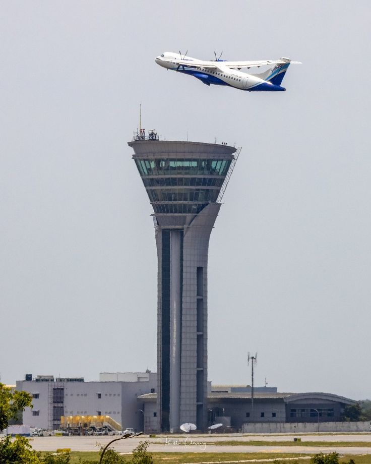

01 Temsili görsel
Hava Trafik Operasyonu
Geçtiğimiz dönem
Sabiha Gökçen Kule Gezisi
Sabiha Gökçen Havalimanı’ndaki kontrol kulesini ziyaret ederek hava trafik operasyonlarının ve uçuşların nasıl koordine edildiğini yerinde gözlemledik.
Kontrol kulesinin çalışma sistemi, operasyon sırasında dikkat edilen noktalar ve hava trafik kontrolörlerinin sorumlulukları hakkında bilgi edindik.